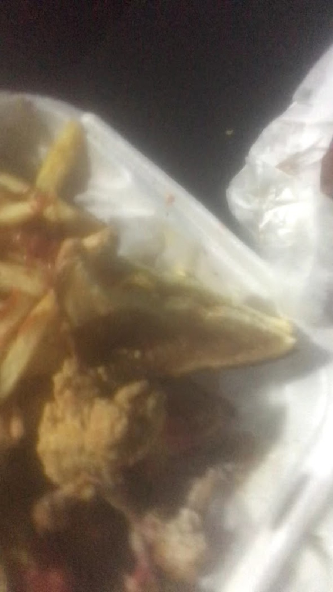
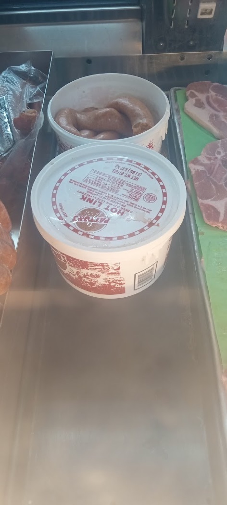
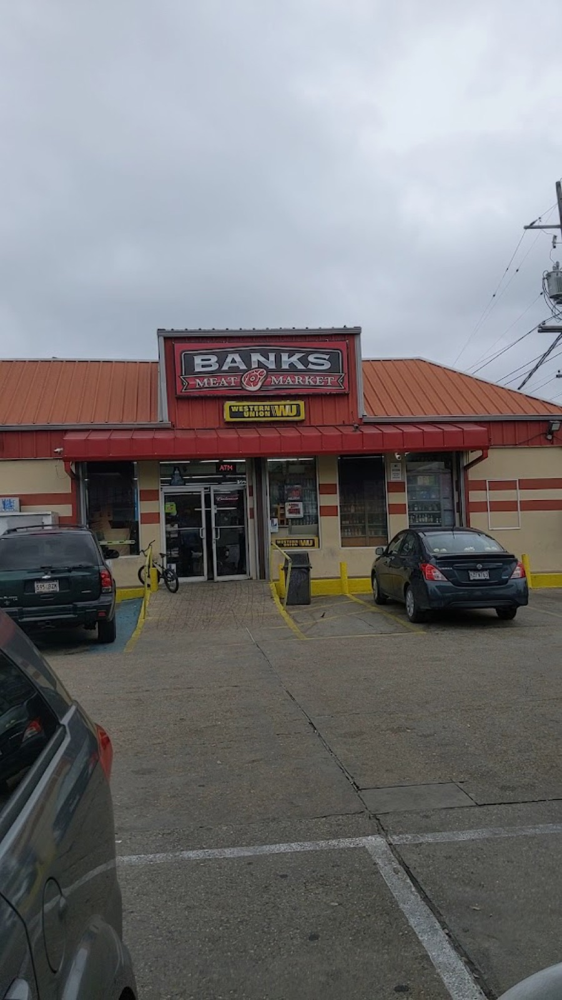
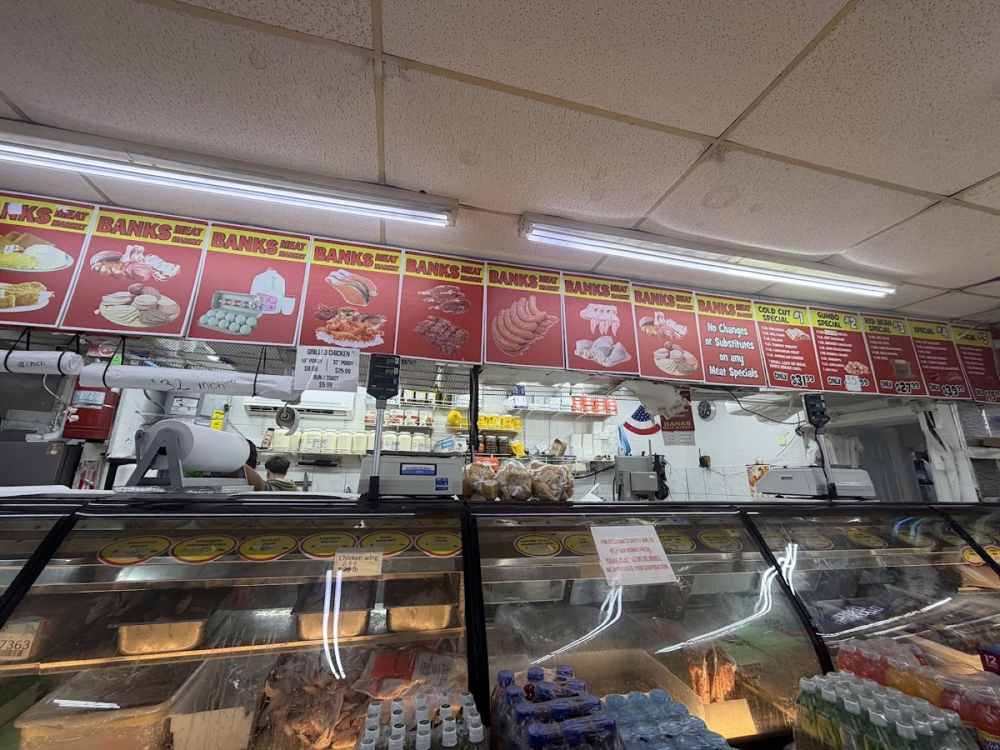
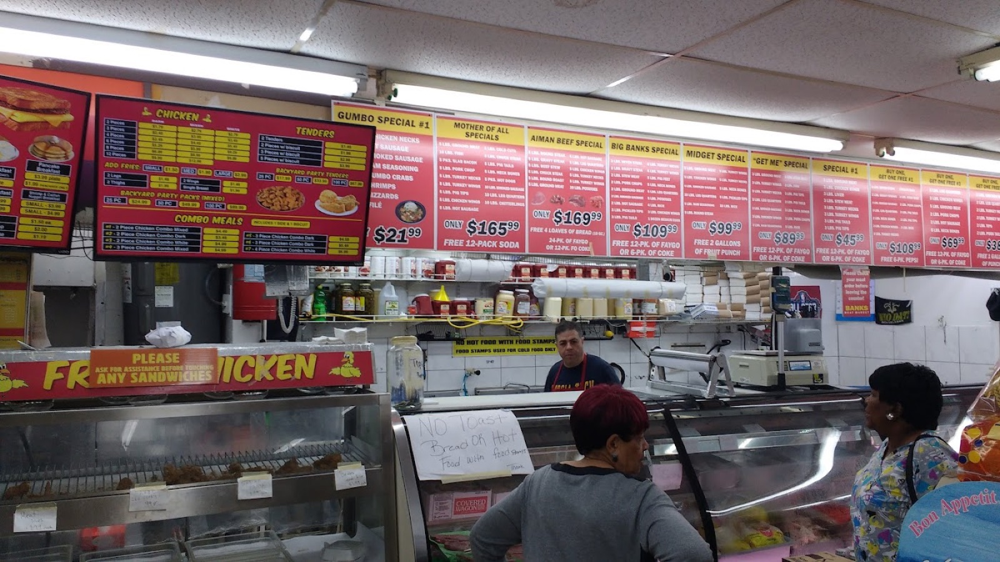
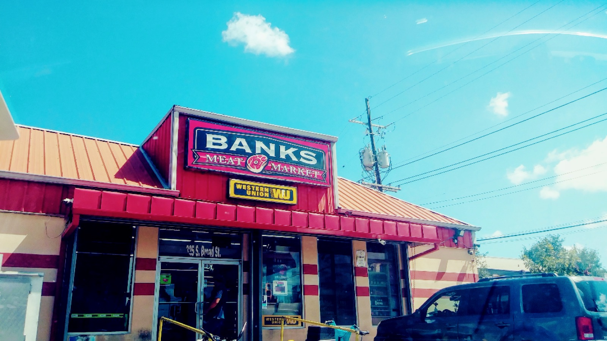
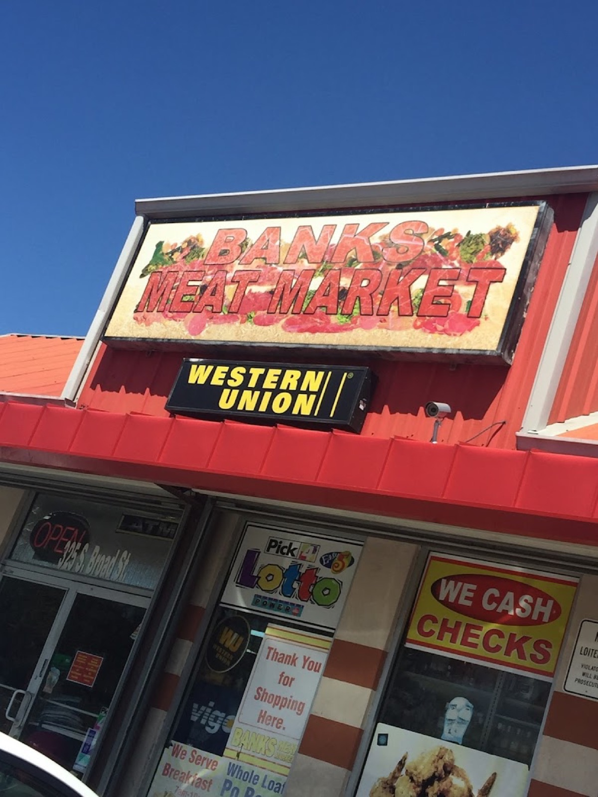
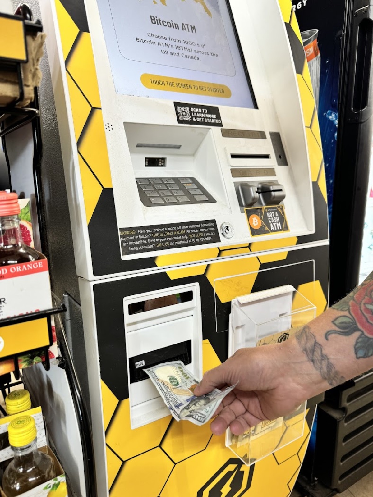
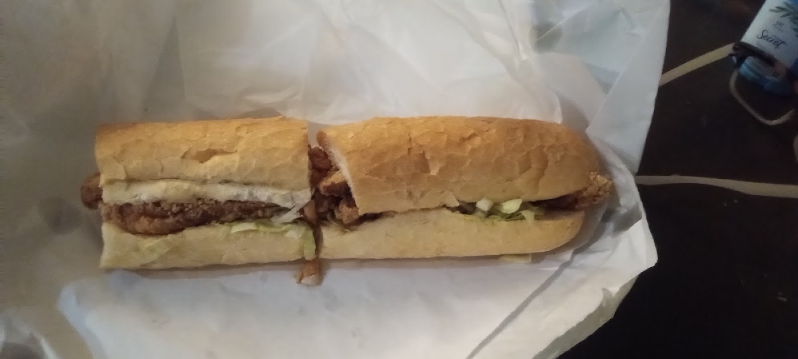
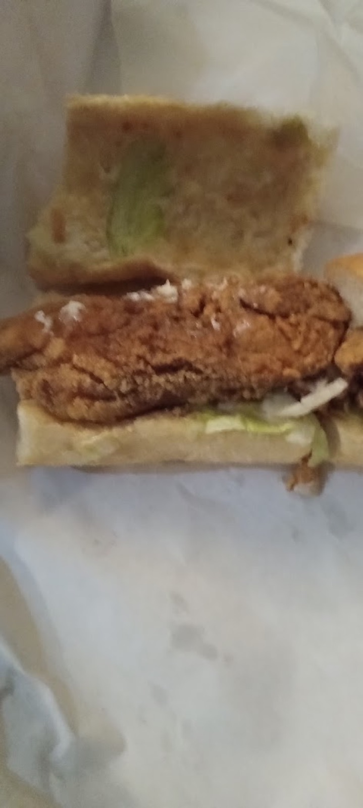

About
Unpretentious local grocery store selling a large array of meats, po' boys & other items. Banks Meat Market is a grocery store in Mid-City, known for poboys, hot roast beef sandwich, hot sausage, fresh meat and sandwiches.
What people come for
poboyshot roast beef sandwichhot sausagefresh meatsandwichesfriendly staffcheck cashinglate night snack
Photos











What people say
★★★★☆
“Hood eats po Boys start at 9.99 I had the trout definitely worth the prices but it may have been whiting I'm not sure that was trout lol. Lb of Hot Sausage for $5.99 which is ridiculous considering it Souse meat like be for real.”
— Danielle Russell★★★★★
“Best neighborhood corner store in Mid-City, bar none.”
— Eric ChristianHours
| Monday | Open 24 hours |
| Tuesday | Open 24 hours |
| Wednesday | Open 24 hours |
| Thursday | Open 24 hours |
| Friday | Open 24 hours |
| Saturday | Open 24 hours |
| Sunday | Open 24 hours |